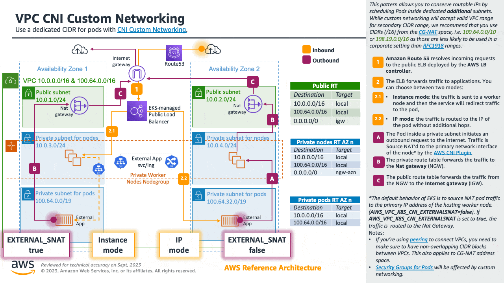

IP 주소 사용 최적화¶
애플리케이션 현대화로 인하여 컨테이너화된 환경의 규모가 빠른 속도로 증가하고 있습니다. 이는 점점 더 많은 워커 노드와 파드가 배포되고 있음을 의미합니다.
아마존 VPC CNI 플러그인은 각 파드에 VPC CIDR의 IP 주소를 할당합니다. 이 접근 방식은 VPC flow logs 및 기타 모니터링 솔루션과 같은 도구를 사용하여 파드 주소를 완벽하게 파악할 수 있도록 합니다. 이로 인해 워크로드 유형에 따라 파드에서 상당한 수의 IP 주소를 사용할 수 있습니다.
AWS 네트워킹 아키텍처를 설계할 때는 VPC와 노드 수준에서 Amazon EKS IP 사용을 최적화하는 것이 중요합니다. 이렇게 하면 IP 고갈 문제를 완화하고 노드당 파드 밀도를 높이는 데 도움이 됩니다.
이 섹션에서는 이러한 목표를 달성하는 데 도움이 될 수 있는 기술에 대해 설명합니다.
노드 레벨 IP 소비 최적화¶
접두사(Prefix) 위임 은 Amazon Virtual Private Cloud(Amazon VPC) 의 기능으로, 이를 통해 Amazon Elastic Compute Cloud (Amazon EC2) 인스턴스에 IPv4 또는 IPv6 접두사를 할당할 수 있습니다. 네트워크 인터페이스당 IP 주소(ENI)가 증가하여 노드당 파드 밀도가 증가하고 컴퓨팅 효율성이 향상됩니다. 사용자 지정 네트워킹에서는 접두사 위임도 지원됩니다.
자세한 내용은 Linux 노드를 사용한 접두사 위임 및 윈도우 노드를 사용한 프리픽스 위임 섹션을 참조하십시오.
IP 소진 완화¶
클러스터가 사용 가능한 IP 주소를 모두 사용하지 않도록 하려면 성장을 염두에 두고 VPC와 서브넷의 크기를 조정하는 것이 좋습니다.
IPv6 채택은 이러한 문제를 처음부터 방지할 수 있는 좋은 방법입니다. 그러나 확장성 요구 사항이 초기 계획을 초과하여 IPv6을 채택할 수 없는 조직의 경우 IP 주소 고갈에 대한 대응책으로 VPC 설계를 개선하는 것이 좋습니다. Amazon EKS 고객이 가장 일반적으로 사용하는 방법은 라우팅이 불가능한 보조 CIDR을 VPC에 추가하고 IP 주소를 Pod에 할당할 때 이 추가 IP 공간을 사용하도록 VPC CNI를 구성하는 것입니다. 이를 일반적으로 사용자 지정 네트워킹이라고 합니다.
노드에 할당된 IP 웜 풀을 최적화하는 데 사용할 수 있는 Amazon VPC CNI 변수에 대해 알아보겠습니다. Amazon EKS에 고유하지는 않지만 IP 고갈을 완화하는 데 도움이 될 수 있는 몇 가지 다른 아키텍처 패턴에 대해 설명하면서 이 섹션을 마치겠습니다.
IPv6 사용 (권장사항)¶
IPv6을 채택하는 것이 RFC1918 제한을 해결하는 가장 쉬운 방법입니다. 네트워크 아키텍처를 선택할 때는 IPv6을 첫 번째 옵션으로 채택하는 것이 좋습니다. IPv6은 총 IP 주소 공간이 훨씬 더 넓기 때문에 클러스터 관리자는 IPv4 제한을 우회하는 데 노력을 기울이지 않고도 애플리케이션을 마이그레이션하고 확장하는 데 집중할 수 있습니다.
Amazon EKS 클러스터는 IPv4와 IPv6을 모두 지원합니다. 기본적으로 EKS 클러스터는 IPv4 주소 공간을 사용합니다. 클러스터 생성 시 IPv6 기반 주소 공간을 지정하면 IPv6을 사용할 수 있습니다. IPv6 EKS 클러스터에서 파드와 서비스는 IPv6 주소를 수신하며, 레거시 IPv4 엔드포인트를 IPv6 클러스터에서 실행되는 서비스에 연결하는 기능을 유지하며 그 반대의 경우도 마찬가지입니다. 클러스터 내의 모든 파드 간 통신은 항상 IPv6을 통해 이루어집니다. VPC(/56)내에서 IPv6 서브넷의 IPv6 CIDR 블록 크기는 /64로 고정됩니다.이는 2^64(약 18억)의 IPv6 주소를 제공하므로 EKS에서 배포를 확장할 수 있습니다.
자세한 내용은 IPv6 EKS 클러스터 실행 섹션을 참조하십시오. 핸즈온 실습은 IPv6 실습 워크숍 내에 Amazon EKS에서의 IPv6에 대한 이해 섹션을 참조하십시오.

IPv4 클러스터의 IP 사용 최적화¶
이 섹션은 기존 애플리케이션을 실행 중이거나 IPv6으로 마이그레이션할 준비가 되지 않은 고객을 대상으로 합니다. 모든 조직이 가능한 한 빨리 IPv6으로 마이그레이션하도록 권장하고 있지만 일부 조직에서는 IPv4로 컨테이너 워크로드를 확장하기 위한 대체 접근 방식을 모색해야 할 수도 있다는 점을 알고 있습니다. 이러한 이유로 Amazon EKS 클러스터를 사용하여 IPv4 (RFC1918) 주소 공간 소비를 최적화하는 아키텍처 패턴도 소개합니다.
확장을 위한 계획¶
IP 고갈에 대한 첫 번째 방어선으로서 클러스터가 사용 가능한 IP 주소를 모두 소비하지 않도록 성장을 염두에 두고 IPv4 VPC와 서브넷의 크기를 조정하는 것이 좋습니다. 서브넷에 사용 가능한 IP 주소가 충분하지 않으면 새 파드나 노드를 생성할 수 없습니다.
VPC와 서브넷을 구축하기 전에 필요한 워크로드 규모에서 역방향으로 작업하는 것이 좋습니다.예를 들어 eksctl(EKS에서 클러스터를 생성하고 관리하기 위한 간단한 CLI 도구)를 사용하여 클러스터를 구축하면 기본적으로 19개의 서브넷이 생성됩니다. /19의 넷마스크는 8000개 이상의 주소를 할당할 수 있는 대부분의 워크로드 유형에 적합합니다.
Attention
VPC와 서브넷의 크기를 조정할 때 IP 주소를 소비할 수 있는 요소 (예: 로드 밸런서, RDS 데이터베이스 및 기타 vpc 내 서비스) 가 여러 개 있을 수 있습니다.
또한 Amazon EKS는 컨트롤 플레인과의 통신을 허용하는 데 필요한 최대 4개의 엘라스틱 네트워크 인터페이스(X-ENI)를 생성할 수 있습니다. (자세한 내용은 다음 문서를 참고하세요.) 클러스터 업그레이드 중에 Amazon EKS는 새 X-ENI를 생성하고 업그레이드가 성공하면 이전 X-ENI를 삭제합니다. 따라서 EKS 클러스터와 연결된 서브넷의 경우 최소 /28 (16개의 IP 주소)의 넷마스크를 사용하는 것이 좋습니다.
샘플 EKS 서브넷 계산기 스프레드시트를 사용하여 네트워크를 계획할 수 있습니다. 스프레드시트는 워크로드 및 VPC ENI 구성을 기반으로 IP 사용량을 계산합니다. IP 사용량을 IPv4 서브넷과 비교하여 구성 및 서브넷 크기가 워크로드에 충분한지 확인합니다. VPC의 서브넷에 사용 가능한 IP 주소가 부족할 경우 VPC의 원래 CIDR 블록을 사용하여 새 서브넷을 생성하는 것이 좋습니다. 이제 Amazon EKS에서 클러스터 서브넷 및 보안 그룹을 수정할 수 있는 점에 유의하세요.
IP 공간 확장¶
RFC1918 IP 공간을 거의 사용한 경우 커스텀 네트워킹 패턴을 사용하여 전용 추가 서브넷 내에서 파드를 스케줄링하여 라우팅 가능한 IP를 절약할 수 있습니다.
커스텀 네트워킹은 추가 CIDR 범위에 모든 유효한 VPC 범위를 허용하지만, CG-NAT (Carrier-Grade NAT, RFC 6598) 공간의 CIDR (/16)을 사용하는 것을 추천합니다. (예: 100.64.0.0/10 또는 198.19.0.0/16) 이는 RFC1918 범위보다 기업 환경에서 사용될 가능성이 적기 때문입니다.
자세한 내용은 Custom 네트워킹 문서를 참조하십시오.

IP 웜 풀 최적화¶
기본 구성을 사용하면 VPC CNI가 전체 ENI(및 관련 IP)를 웜 풀에 보관합니다. 이로 인해 특히 대규모 인스턴스 유형에서 많은 IP가 소모될 수 있습니다.
클러스터 서브넷의 사용 가능한 IP 주소 수가 제한되어 있는 경우 다음 VPC CNI 구성 환경 변수를 자세히 살펴보십시오:
WARM_IP_TARGETMINIMUM_IP_TARGETWARM_ENI_TARGET
노드에서 실행할 것으로 예상되는 파드의 수와 거의 일치하도록 MINIMUM_IP_TARGET 값을 구성할 수 있습니다. 이렇게 하면 파드가 생성되고 CNI는 EC2 API를 호출하지 않고도 웜 풀에서 IP 주소를 할당할 수 있습니다.
WARM_IP_TARGET 값을 너무 낮게 설정하면 EC2 API에 대한 추가 호출이 발생하고 이로 인해 요청이 병목 현상이 발생할 수 있다는 점에 유의하시기 바랍니다. 대규모 클러스터의 경우 요청의 병목 현상을 피하려면 MINIMUM_IP_TARGET과 함께 사용하십시오.
이러한 옵션을 구성하려면 aws-k8s-cni.yaml 매니페스트를 다운로드하고 환경 변수를 설정하면 됩니다. 이 글을 쓰는 시점에서 최신 릴리스는 다음 링크를 참조하세요. 구성 값의 버전이 설치된 VPC CNI 버전과 일치하는지 확인하세요.
Warning
CNI를 업데이트하면 이러한 설정이 기본값으로 재설정됩니다. 업데이트하기 전에 CNI를 백업해 두세요. 구성 설정을 검토하여 업데이트가 성공한 후 다시 적용해야 하는지 결정하십시오.
기존 애플리케이션을 다운타임 없이 즉시 CNI 파라미터를 조정할 수 있지만 확장성 요구 사항을 지원하는 값을 선택해야 합니다. 예를 들어, 배치 워크로드로 작업하는 경우 파드 스케일 요구 사항에 맞게 기본 WARM_ENI_TARGET으로 업데이트하는 것이 좋다. WARM_ENI_TARGET을 높은 값으로 설정하면 대규모 배치 워크로드를 실행하는 데 필요한 웜 IP 풀을 항상 유지하므로 데이터 처리 지연을 피할 수 있습니다.
Warning
IP 주소 고갈에 대한 대응책은 VPC 설계를 개선하는 것이 좋습니다. IPv6 및 보조 CIDR과 같은 솔루션을 고려해 보십시오. 다른 옵션을 제외한 후에는 이러한 값을 조정하여 웜 IP 수를 최소화하는 것이 일시적인 해결책이 될 수 있습니다. 이러한 값을 잘못 구성하면 클러스터 작동에 방해가 될 수 있습니다.
프로덕션 시스템을 변경하기 전에 이 페이지의 고려 사항을 반드시 검토하십시오.
IP 주소 인벤토리 모니터링¶
위에서 설명한 솔루션 외에도 IP 활용도를 파악하는 것도 중요합니다. CNI 메트릭 헬퍼를 사용하여 서브넷의 IP 주소 인벤토리를 모니터링할 수 있습니다. 사용 가능한 일부 메트릭은 다음과 같습니다.
- 클러스터가 지원할 수 있는 최대 ENI 수
- 이미 할당된 ENI 수
- 현재 파드에 할당된 IP 주소 수
- 사용 가능한 전체 및 최대 IP 주소 수
서브넷의 IP 주소가 부족할 경우 알림을 받도록 CloudWatch 알람을 설정할 수도 있습니다. CNI 메트릭 헬퍼의 설치 지침은 EKS 사용 설명서를 참조하십시오.
Warning
VPC CNI의 DISABLE_METRICS 변수가 false로 설정되어 있는지 확인하십시오.
추가 고려 사항¶
Amazon EKS에 고유하지 않은 다른 아키텍처 패턴도 IP 고갈에 도움이 될 수 있습니다. 예를 들어 VPC 간 통신을 최적화하거나 여러 계정에서 VPC 공유를 사용하여 IPv4 주소 할당을 제한합니다.
여기에서 이러한 패턴에 대해 자세히 알아보세요.